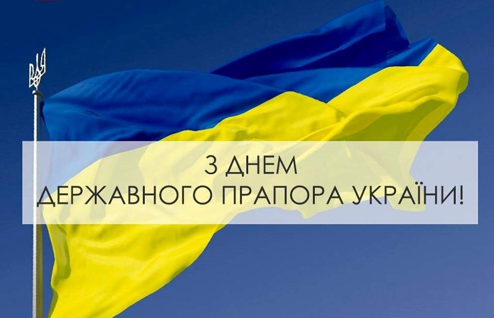

Державний Прапор в Конституції України (визначення)
23 серпня Україна відзначає День Державного Прапора
Історія українського прапора
Прапор України є одним із державних символів нашої держави. Його кольори відбивають національні традиції, що ідентифікують певну територію протягом історичного періоду. Утвердження синьо-жовтого поєднання як українських національних кольорів відбулося під час європейської “весни народів”.
Такий прапор вперше замайорів у червні 1848 року на міській ратуші Львова. Відтоді полотнища в національних кольорах почали використовувати у Галичині, Буковині та на Закарпатті під час проведення Шевченківських та інших свят.
Офіційно прапор було затверджено 27 січня 1918 року в Тимчасовому законі про флот УНР. На есмінцяхі лінкорах, що базувалися у Севастополі, було піднято український стяг. Він використовувався стихійно, порядок його барв ще не був усталений. Траплялися обидва варіанти розміщення смуг – як синьо-жовте, так і жовто-синє. Натомість у всіх ухвалених українськими урядами документах 1918 року затверджено саме синьо-жовте поєднання кольорів.
Прапор в історичних періодах:
Кольори свободи
Попри різноманітні версії символізму у кольорах прапора, синьо-жовтий стяг для українців — це однозначно символ свободи й боротьби за незалежність. Під цим прапором відбулися три проголошення української державності: 1917, 1941 та 1990 року, а також пройшли три сучасні революції:
- Студентська революція на граніті
- 1990 року
- Помаранчева революція
- 2004 року
- Революція Гідності
- 2011 року
Значення кольорів прапора
У найбільш поширеному тлумаченні кольори прапора пояснюють так: синя смуга
символізує ясне небо, а жовта —
золоті поля пшениці.
Також існує думка, що кольори прапора зображають дві стихії природи — воду і вогонь.
Водночас з релігійної точки зору, жовтий колір уособлює Творця, а синій символізує усе земне.